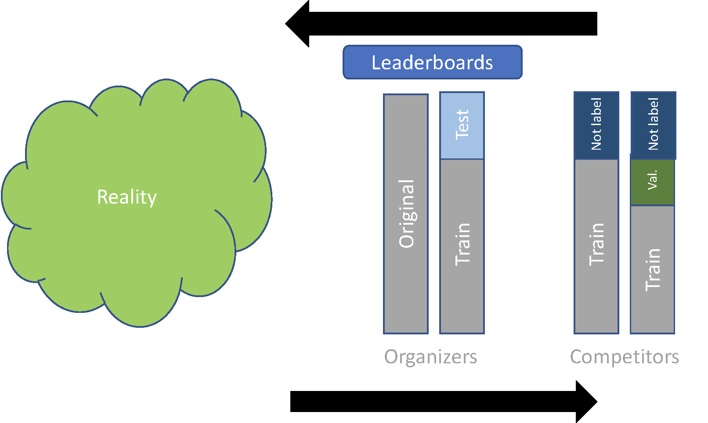

1 + 12
| Obs | Gold Standard | WordUp.01 | … | SQYQP.01 |
|---|---|---|---|---|
| 1 | favor | favor | … | favor |
| 2 | favor | favor | … | none |
| 3 | against | none | … | against |
| 4 | none | none | … | none |
| … | … | … | … | … |
| (n_{test}) | none | favor | … | against |
Table: Results for VaxxStance Close track - contextual.
| System | Basque |
|---|---|
| WordUp.01 | 0.5734 |
| WordUp.02 | 0.5465 |
| MultiAztertest.01 | 0.5024 |
| SQYQP.01 | 0.4256 |
| MultiAztertest.02 | 0.3428 |
Table: Results using Macro-averaged F1 Score for “favor” and “against”.
| Competition | Subtask / Language | Metric Used | Data Considered |
|---|---|---|---|
| MEX-A3T 2019 | Author Profiling (Spanish, text and images) | Macro-averaged F1 Score | All participants |
| Aggressiveness Detection (Spanish) | F1 Score | All participants | |
| TASS 2020 | General Polarity (Spanish) | Macro-averaged F1 Score | All participants (Best Runs) |
| VaxxStance 2021 | Stance Detection (Basque, Spanish) | Macro-averaged F1 Score for “favor” and “against” | All participants |
| EXIST 2021 | Sexism Identification (English, Spanish) | Accuracy | Top 10 for each language (Best Runs) |
| Sexism Categorization (English, Spanish) | Macro-averaged F1 Score | Top 10 for each language (Best Runs) | |
| DETOXIS 2021 | Toxicity Detection (Spanish) | F1 Score | All participants (Best Runs) |
| MeOffendEs 2021 | Offensive Language Identification (Mexican Spanish) | F1 Score (offensive class) | All participants (Best Runs) |
| REST-MEX 2021 | Recommendation System (Mexican Spanish) | MAE | All participants (baseline) |
| Sentiment Analysis (Mexican Spanish) | MAE | All participants (baseline) | |
| REST-MEX 2022 | Sentiment Analysis (Mexican Spanish) | Measure_S | All participants (majority class) |
| Epidemiological Semaphore (Mexican Spanish) | Measure_C | All participants (majority class) | |
| PAR-MEX 2022 | Paraphrase Identification (Mexican Spanish) | F1 Score | All participants (Best Runs) |
Table: Metrics and data considered across various competitions.
1 + 121 + 1Challenge scheme
Here you can add a description of the evaluation criteria used in your comparative analysis.
Results and corresponding analysis can be shown here.
Details regarding system performance.
Summarize the key takeaways from your analysis.